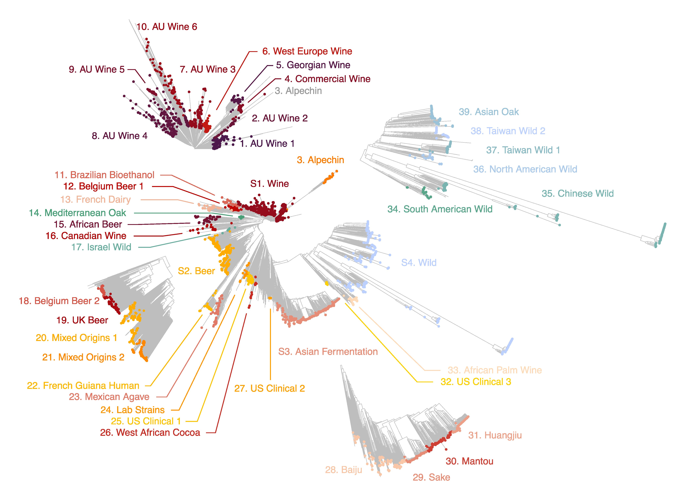

Protocol for joint genotyping the 3,034 Saccharomyces cerevisiae population
2024-07-19

Introduction
This book contains the protocol to build the SNP and InDel matrices as for the 3,034 Saccharomyces cerevisiae population. The GVCF files of the 3,034 isolates are required and can be downloaded here:

Additional isolates can be easily included by generating new GVCF files. Reference genome and bed file required can be found in the zenodo repository.
This protocol follow the GATK best practices to identify germline short variants (SNPs and InDels) in one or more individuals to produce a joint callset in VCF format.